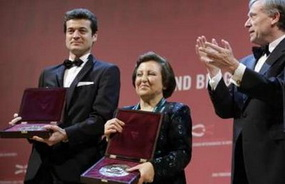

پذيرش > سایت نوشته ها > دولت ایران در صدر دشمنان اینترنت است
 گفت و گو با شیرین عبادی و رضا معینی، برندگان جایزه بنیاد رولاند برگر گفت و گو با شیرین عبادی و رضا معینی، برندگان جایزه بنیاد رولاند برگر

 دولت ایران در صدر دشمنان اینترنت است دولت ایران در صدر دشمنان اینترنت است
11 اردیبهشت 1388 - رادیو زمانه - نسخه قابل چاپ
بنیاد رولاند برگر (Roland Berger Stiftung ) که در زمینهی حقوق بشر و ارزشهای انسانی مرتبط با آن فعالیت میکند، دومین سالی است که جوایزی را به کوشندگان این راه اهدا میکند.
روز بیست و یکم آوریل ۲۰۰۹ میلادی، این بنیاد در شهر برلین، با حضور رییس جمهور آلمان هورست کوهلر (Horst Koehler)، جایزهی امسال را مشترکاً، به «سازمان گزارشگران بدون مرز» و خانم شیرین عبادی، برندهی جایزهی صلح نوبل سال ۲۰۰۳ میلادی، اهدا کرد.
با خانم شیرین عبادی و آقای رضا معینی، مسئول بخش ایران سازمان گزارشگران بدون مرز، گفت و گوهای کوتاهی کردهام.
نخست شیرین عبادی میگوید:
بنیاد رولاند برگر، موسسهای است که در زمینهی مسایل مختلف حقوق بشر و کرامت انسانی فعالیت میکند و هر سال جایزهای به افرادی که در این زمینه خدمات ارزندهای انجام داده باشند، اعطا میکند. امسال، دومین سالی است که این جایزه اعطا میشود.
این جایزه توسط رییس بنیاد و رییس جمهور آلمان، در سالن بزرگ کنفرانس شهر برلین، مشترکاً به سازمان گزارشگران بدون مرز که مقر آن در پاریس است و من، به مناسبت تأثیرگذاری در جهت اطلاعرسانی، به منظور اشاعهی فرهنگ حقوق بشر در کشور خودمان و در سطح بینالمللی، اهدا شد.
خانم عبادی، با توجه به اینکه این جایزه در ارتباط با گزارشدهی مستمر و موثر شما و «سازمان گزارشگران بدون مرز» هست و «کانون مدافعان حقوق بشر» یکی از نهادهایی بوده که این گزارشدهی را بر عهده داشت. پس از پلمب این کانون توسط دولت جمهوری اسلامی ایران، آیا کار شما مختل نشد؟
علاوه بر اینکه دفتر کانون مدافعان حقوق بشر را به صورت غیرقانونی بستند و پلمب کردند، عدهای به بهانهی مالیات به دفتر وکالت شخصی من آمدند، کامپیوترها و پروندههای من را بردند و بعد از پانزده روز آنها را بازگرداندند. چیزی پیدا نکردند. منشی کانون را دستگیر کردند که بعد از دو ماه با وثیقه آزاد شد.
بعد از آن هم عدهای به جلوی دفتر وکالت من آمدند، دیوار و تابلوی وکالتم را تخریب کردند و همهی اینها در مقابل چشمان پلیس اتفاق افتاد. اینگونه امور، طبیعتاً، باعث کندی کار ما میشود، ولیکن برای مدت محدودی. ما بلافاصله اعلام کردیم که بستن کانون به منزلهی تعطیل فعالیتهای قانونی ما نیست.
ما تمامی کارها و فعالیتهای کانون حقوق بشر را که شامل سه محور عمده است، بلافاصله بعد از بیست و چهار ساعت، ادامه دادیم. این سه محور: دفاع رایگان از متهمان سیاسی عقیدتی، حمایت از خانوادهی زندانیان سیاسی و گزارشدهی مستمر راجع به وضعیت حقوق بشر در ایران است.
از آقای رضا معینی، مسئول بخش ایران «سازمان گزارشگران بدون مرز»، دربارهی این جایزه میپرسم:
با اینکه دومین سالی است که این جایزه اهدا میشود، اما برای ما به دو دلیل جایزهی بسیار پراهمیتی است که در اطلاعیهای که منتشر کردهایم آن را اعلام کردهایم.
اولاً، که در هر صورت نفس اهدای این جایزه برای همیاری با فعالین، روزنامهنگاران و همهی کسانی است که بهویژه در عرصهی کار ما، یعنی آزادی بیان و مطبوعات، در جهان برای حقوق بشر تلاش میکنند. اینکه کار ما از این زاویه، مورد ارجگذاری قرار گرفته است، بسیار خوشحال هستیم.
علت دوم خوشحالی ما این است که این جایزه در کنار برندهی صلح نوبل، خانم عبادی، به ما داده شده و همانگونه که دبیر اول گزارشگران بدون مرز هم اعلام کرد، برای ما افتخاری است که در کنار بانوی صلح ایران و مدافع حقوق بشر این جایزه به ما تعلق گرفته است.
در شرایطی که طی ماههای گذشته خود ایشان و همکارانشان و میتوان گفت، مجموعهی فعالین حقوق بشر، تحت فشار قرار گرفته بودند، از این زاویه نیز خرسندیم که در کنار ایشان، این جایزه به ما اعطا شد.
آقای معینی، این جایزه به مجموعهی گزارشگران بدون مرز اهدا شده و متوجه بخش ایران، به طور خاص، نیست. همینطور است؟
کاملاً درست است. کلیت سازمان گزارشگران بدون مرز مورد نظر بوده و ربط چندانی به مسألهی ایران این سازمان ندارد.
سازمان گزارشگران بدون مرز، در رابطه با کدام کشورها، در این فاصلهی دو ساله، فعالیت بیشتری داشته است؟
حوزهی فعالیت ما مجموعهی پنج یا شش قارهای است که تقسیمبندی سازمان ما است. اما سنت سازمان گزارشگران بدون مرز اینگونه است که هر سال تعدادی از کشورها را بنا بر وضعیت خاصشان در اولویت قرار میدهد.
مثلا، برای امسال، افغانستان، ایران، کرهی شمالی، مکزیک، تایوان و مجموعهای از کشورهایی که آزادی بیان و مطبوعات در آنها هر روز بیشتر مورد سرکوب قرار میگیرد، در اولویت هستند. در سال جدید میلادی هم اولین سفر خارجی گزارشگران بدون مرز به افغانستان بود.
گزارشدهی از کدام کشورها، برای شما دشوارتر است؟
میتوانم بگویم، در ارتباط با مجموعهی کشورهایی که (تقریباً مشترک هم هستند) برای مثال، در لیست دشمنان اینترنت قرار دارند، برای رفت و آمد، تهیهی گزارش و اینگونه مسایلی که کار روزمرهی ما است مشکل داریم…
که ایران جزو این کشورها است؟
بله، ایران متأسفانه، چندین سال است که در صدر این کشورها قرار دارد و وضعیت امروز ایران، وضعیت دیروز ایران و طی سالهای گذشته، میتوانیم بگوییم که نه تنها بهبود پیدا نکرده که روز به روز هم بدتر میشود.
مریم محمدی
ارسال به
بالاترین
،
توییتر
،
فریندفید
،
فیسبوک
در همين بخش :
 یک خبر تلخ؟ یک قانونشکنی؟ یک تصمیم بخشنامهای جدید؟ یک خبر تلخ؟ یک قانونشکنی؟ یک تصمیم بخشنامهای جدید؟
چرا بایست به سکسوالیته پرداخت؟ / نفیسه آزاد
آزارجنسی خانگی؛ «قربانی» نه، «نجات یافته»
زنان، بزرگترین بازندگان بهار عرب
سانسور از دیدگاه جنسیتی/الهه امانی
ديگر بخش ها :
طرح یک میلیون امضا
|
مقالات
|
سایت نوشته ها
|
اخبار
|
گزارش كمپين
|
گفت و گو
|
علیه سکوت
|
كوچه به كوچه
|
نامه های شما
|
گزارش ویژه
|
گفتگو با اعضا
|
ویژه سالگرد کمپین
|
تصویر برابری
|
دل آرام علی
|
تریبون
|
مقالات
|
تاریخ شفاهی
|
خارج از چارچوب
|
کتابخانه
|
درباره کمپین
|
کمپین در شهرها
|
کمپین در بند
|
صدای تغییر
|
ویژه 22 خرداد
|
لایحه حمایت از خانواده
|
گالری
|
عشا مومنی
|
امیر یعقوبعلی
|
خدیجه مقدم
|
راحله عسگری زاده و نسیم خسروی
|
پروین اردلان،جلوه جواهری، مریم حسین خواه، ناهید کشاورز
|
زینب پیغمبرزاده
|
سعیده امین، سارا ایمانیان، محبوبه حسین زاده، ناهید کشاورز و همایون نامی
|
احترام شادفر
|
نسیم سرابندی زاده،فاطمه دهدشتی
|
وبلاگ مهمان
|
پرونده خرم آباد
|
دستگیری ها
|
مریم مالک
|
پرستو اللهیاری
|
مهرنوش اعتمادی
|
سمیه رشیدی
|
Other Languages
|
همراهان
|
«فراخوان کمپین ده روز با بهاره هدایت»
| English
|